AUDIO CRAFT（オーディオクラフト）
パイプ交換式のワンポイントサポート方式のオイルダンプ・アームで知られるブランド。当初はアームに専念し、カートリッジはMM型を2機種扱う程度だったが、1980年代に入り、高級MC型に進出、その後トランス、イコライザーアンプなどにも進出した。
2000年過ぎまで製品を発表していたが、最近では見かけない。現在の状況は不明。なおMC型カートリッジAC-01などの開発にたずさわった方が、同社退職後に興したブランドが、「マイソニックラボ」であり、同社の製品は、どこか1980年代以降のオーディオクラフトを思わす。
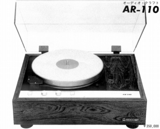
(1980年代のアナログ爛熟期にはプレイヤーも出していた。日本では珍しいフローティングタイプのAR-110)
�T.カートリッジ
1.MM型
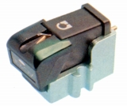
(AC-10E)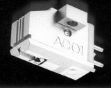
(AC-01)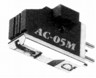
(AC-05M)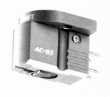
(AC-03)
�U.昇圧トランス・フォノイコライザーアンプ
1.昇圧トランス
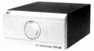
(TS-20)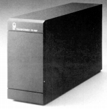
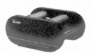
(TS-200)2.フォノイコライザーアンプ 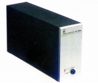
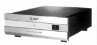
(PE-500MM)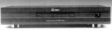
(PE-6000 Signature)PE-5500 PE-6000 Signature PE-6000 Signature Improved
�V.アーム
このブランドのアームの特長は、まずワンポイントサポート式のオイルダンプ・アームであることである。同社ではバネなどによる機械式のダンプに比べ、微調整が効くのが長所としている。ついで2代目モデルというべきAC-300MK�Uから採用したのが、アームパイプ交換式である。パイプ交換式には、接点が増えるというデメリットもあるが、オルトフォンのSPU/AやEMTのTSD-15など特殊なタイプにも対応できること、さらに1970年代後半からのローマス/ハイコンプライアンス対応が可能であるメリットがある。
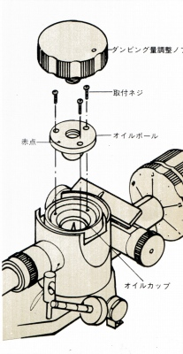
(AC-3000のダンピング機構 注油量は0.3cc 通常では2年に一度程度の交換を推奨していた）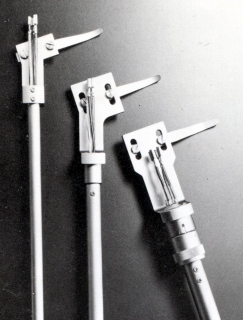
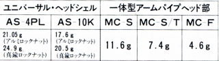
(ユニバーサル・ヘッドシェルと一体型アームパイプの比較。ヘッドシェルにはコネクター部の重量も含めれているようだ。）
1.AC300/400系
ブランド立ち上げ当初のシリーズ。ワンポイントサポート式のオイルダンプ・アームである。改良型のAC-300/400Cを経て、パイプ交換式のAC-300/400MK�Uに発展する。AC-300/400Aは、パイプ交換式に進化した製品に対するスタンダート・モデルか？なおAC-300/400MK�Uは、後のAC-3000/4000MCと比較すると、軽量型・MM型向けの設定であった。パイプ素材はアルミ、パイプ径もAC-3000/4000MCの9�o径に対し8�o径、標準の出力コードはMM型向けの低容量タイプである。
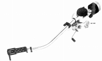
(AC-300)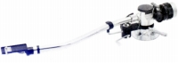
(AC-400MK�U)AC-300A AC-400A AC-300MK�U AC-400MK�U
AC-300MK�U用交換パイプ AC-400MK�U用交換パイプ
2.AC-3000/4000系
AC-300/400MK�Uからの発展モデル。アームベースが強化されている。AC-3000/4000MCは、ベースモデルのAC-300/400MK�Uが軽量・MM型向けであるのに対し、パイプ素材は真鍮、パイプ径もAC-300/400MK�Uの8�o径に対し9�o径、標準の出力コードは低抵抗タイプである。AC-3000MCの改良型にアームパイプ3本を付属させたのがAC-3000Limited、AC-3000Limitedのベースに付属アームを1本としたのがAC-3000
Silver。さらにアームベースを改善したのがAC-3300である。
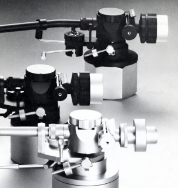 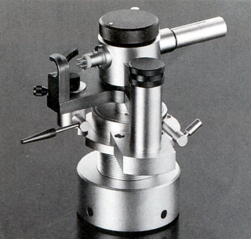
(左 上からAC-3000MC、3000Black、3000Silver 右 AC-3300/4400のセンターブロック相当のCB3040)
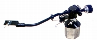
(AC-3000MC)AC-3000MC用交換パイプ AC-4000MC用交換パイプ AC-3000/4000MC初期システムチャート
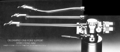
(AC-3000Limited)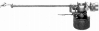
(AC-4000 Silver)AC-3000/4000 Silver時代のシステムチャート 主要カートリッジ適応表
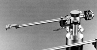
(AC-3300)AC-3300/4400シリーズ用オプション（1990年頃のもの）
�W.その他
シェルは音質の良さで定評があった。
1.ヘッドシェル
2.リードワイヤー他
3.スタビライザー他
5.その他